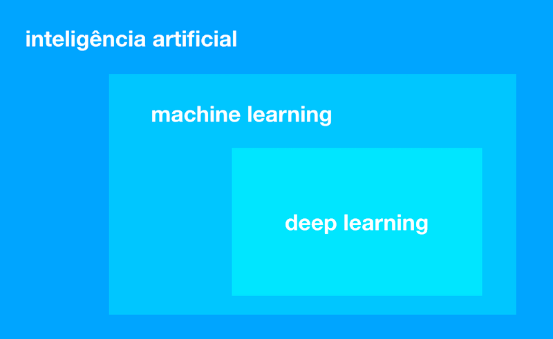
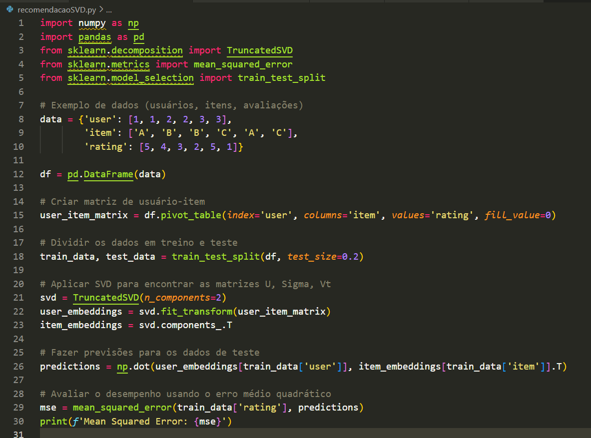
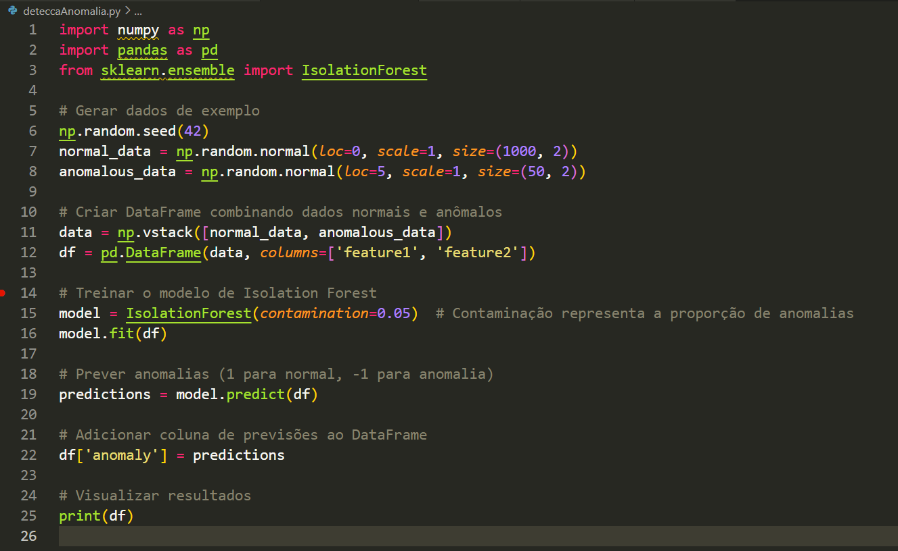
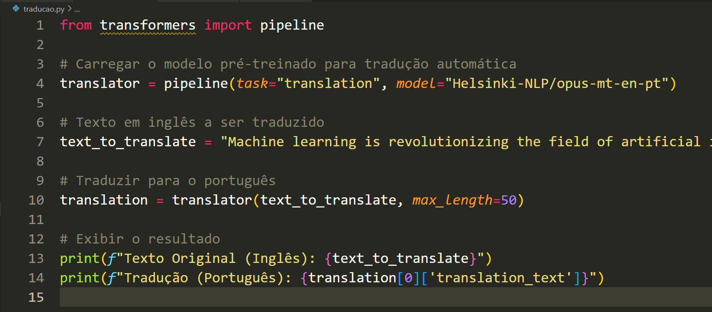

Portfólio 6 - Inteligência Artificial
Aprendizado de Máquina
Aprendizado de Máquina.
Machine learning é o uso de algoritmos para organizar dados, reconhecer padrões e fazer com que computadores aprendam com esses modelos para gerar insights inteligentes sem a necessidade de pré-programação.
De uma forma mais geral, podemos dizer que machine learning é a área da ciência da computação que permite tornar a inteligência artificial real.
Os algoritmos de machine learning aprendem a partir dos dados inseridos em si. Assim, as máquinas são treinadas para aprender a executar diferentes tarefas de forma autônoma. Logo, ao serem expostas a novos dados, elas se adaptam a partir dos cálculos anteriores e os padrões se moldam para oferecer respostas confiáveis.
A Imagem 1 demonstra que aprendizado de máquina é uma subárea da inteligência artificial que se concentra no desenvolvimento de algoritmos que podem aprender a partir de dados. O aprendizado profundo é uma subárea do aprendizado de máquina que se concentra no uso de redes neurais profundas para aprender.

Imagem 1 - Enquadramento do aprendizado de máquina
Tipos
Imagem 2 - Tipos de Aprendizado e utilizações
Na prática, o Machine Learning possui 3 tipos de variações, como mostra a Imagem 2, que definem diferentes tipos de aprendizado. Eles são:
Aprendizado Supervisionado
Nesse tipo de aprendizado, os algoritmos são treinados usando um conjunto de dados rotulados, ou seja, cada exemplo de treinamento é acompanhado de uma resposta correta. O objetivo do algoritmo é aprender a mapear as entradas para as saídas corretas, de modo que possa fazer previsões precisas para novos dados. Exemplos de algoritmos de aprendizado supervisionado incluem regressão linear, regressão logística, máquinas de suporte vetorial (SVM) e redes neurais.
O aprendizado de máquina supervisionado é uma abordagem na qual o algoritmo é treinado com um conjunto de dados rotulado, ou seja, dados que incluem pares de entrada e saída desejada. Nesse contexto, alguns dos algoritmos fundamentais são K-Nearest Neighbors (KNN), Modelos Lineares e Classificadores Bayesianos.
i. K-Nearest Neighbors (KNN):
O K-Nearest Neighbors é um algoritmo simples e intuitivo que se baseia na ideia de que instâncias semelhantes tendem a existir próximas umas das outras. O funcionamento do KNN é direto: dado um novo ponto de dados, o algoritmo identifica os "k" pontos mais próximos no conjunto de treinamento e atribui a classe mais comum entre esses vizinhos ao novo ponto. O KNN é amplamente utilizado em problemas de classificação e regressão, sendo especialmente útil em situações onde a estrutura dos dados é complexa ou não linear.
ii. Modelos Lineares:
Os Modelos Lineares constituem uma classe de algoritmos que assume uma relação linear entre as variáveis de entrada e a saída. Em seu formato mais simples, um modelo linear realiza uma combinação linear dos atributos de entrada, adiciona um termo de viés (intercept) e produz uma saída. Este modelo é particularmente eficaz quando a relação entre as variáveis é aproximadamente linear. Regressão Linear e Regressão Logística são exemplos comuns de Modelos Lineares, utilizados para prever valores contínuos ou realizar classificação binária, respectivamente.
iii. Classificadores Bayesianos:
Os Classificadores Bayesianos são fundamentados no teorema de Bayes e na probabilidade condicional. Esses algoritmos calculam a probabilidade de uma instância pertencer a uma classe específica com base na probabilidade das características observadas. O Classificador Naive Bayes é um exemplo proeminente dessa categoria, assumindo a independência condicional entre os atributos, simplificando assim o cálculo das probabilidades. Essa abordagem é eficiente e funciona bem em conjuntos de dados de alta dimensionalidade. Os Classificadores Bayesianos são amplamente utilizados em tarefas de classificação, como filtragem de spam e diagnósticos médicos.
Em resumo, esses algoritmos de aprendizado supervisionado oferecem abordagens distintas para lidar com diferentes tipos de dados e cenários. A escolha entre eles dependerá das características específicas do problema em questão, como a natureza dos dados, a complexidade da relação entre variáveis e os requisitos de desempenho do modelo.
Aprendizado Não Supervisionado
Nesse caso, os algoritmos são treinados em um conjunto de dados não rotulados, o que significa que não há respostas corretas fornecidas. O objetivo é descobrir padrões ou estruturas ocultas nos dados sem a necessidade de rótulos. Os algoritmos de aprendizado não supervisionado são usados para agrupar dados semelhantes (clusterização) ou reduzir a dimensionalidade dos dados. Esta forma de aprendizado inclui análise de cluster e autoencoders.
Os algoritmos de aprendizado não supervisionado exploram a estrutura e padrões intrínsecos nos dados sem depender de rótulos pré-existentes. Duas abordagens notáveis nesse domínio são o K-means Clustering e os Mapas Auto-organizáveis (Self-Organizing Maps).
i. K-means Clustering:
O K-means é um dos algoritmos de clustering mais amplamente utilizados. Sua principal tarefa é agrupar um conjunto de dados em k clusters, onde cada cluster é representado pelo seu centróide, que é a média dos pontos de dados no cluster. O algoritmo itera entre atribuir pontos ao cluster mais próximo e recalcular os centróides até que a convergência seja alcançada. K-means é eficiente e fácil de entender, sendo aplicado em uma variedade de contextos, como segmentação de clientes, compressão de imagem e reconhecimento de padrões.
ii. Self-Organizing Maps (SOM):
Os Mapas Auto-organizáveis são uma classe especial de redes neurais que visa mapear dados de alta dimensão em uma grade bidimensional ou tridimensional de forma topologicamente organizada. A característica distintiva dos SOMs é a capacidade de preservar as relações espaciais entre os dados durante o processo de treinamento. Cada nó na grade representa um neurônio e está associado a um vetor de peso. Durante o treinamento, os neurônios ajustam seus pesos para representar características importantes do conjunto de dados. SOMs são frequentemente utilizados para visualização de dados complexos e redução de dimensionalidade, facilitando a identificação de padrões e clusters.
Ambos os algoritmos, K-means e SOM, são fundamentais no aprendizado não supervisionado, fornecendo meios eficazes de explorar a estrutura subjacente nos dados. A escolha entre eles dependerá das características específicas do problema em questão, como a natureza dos dados, a dimensionalidade e a complexidade das relações a serem identificadas. O K-means é mais adequado para problemas de clustering simples, enquanto os SOMs são especialmente úteis quando a topologia dos dados é uma consideração importante.
Aprendizado por Reforço
Nesta forma, os algoritmos aprendem através da interação contínua com um ambiente. O agente de aprendizado recebe feedback na forma de recompensas ou penalidades após ações executadas em determinado contexto. O objetivo do agente é aprender a tomar decisões que maximizem a recompensa ao longo do tempo. O aprendizado por reforço é frequentemente usado em jogos, robótica, otimização e outras áreas onde as ações são sequenciais e têm consequências a longo prazo.
O aprendizado por reforço é um paradigma no qual um agente interage com um ambiente, toma decisões sequenciais e recebe feedback na forma de recompensas ou penalidades. O objetivo é que o agente aprenda a tomar ações que maximizem as recompensas ao longo do tempo. Um algoritmo de aprendizado por reforço notável é o Q-Learning.
i. Q-Learning:
O Q-Learning é um algoritmo de aprendizado por reforço que pertence à classe dos métodos de aprendizado de valor. Ele é particularmente eficaz em ambientes nos quais o agente não possui conhecimento prévio sobre o ambiente e deve aprender por tentativa e erro. O Q-Learning estima a qualidade (ou valor) de cada par estado-ação, representado pela função Q.
O processo de aprendizado envolve a atualização iterativa dos valores Q com base nas recompensas recebidas pelo agente. O algoritmo utiliza uma fórmula de atualização que leva em consideração a recompensa instantânea, a estimativa do valor máximo futuro (utilizando a função Q) e um fator de desconto para considerar a importância do futuro em relação ao presente.
O Q-Learning é especialmente aplicado em problemas nos quais o agente pode explorar diferentes ações e aprender uma política ótima ao longo do tempo. Ele tem sido utilizado em uma variedade de domínios, desde jogos até controle de robôs, e é uma base para muitos algoritmos mais avançados de aprendizado por reforço.
No processo de treinamento, o Q-Learning permite que o agente aprenda ações que resultam em recompensas mais altas, ajustando gradualmente suas estimativas de valores Q. Esse tipo de abordagem é poderoso em cenários nos quais é difícil definir um conjunto de regras explícitas para o agente seguir, permitindo que ele descubra estratégias eficientes por conta própria.
Classificação e Regressão
Imagem 3 - Classificação Vs Regressão
As aplicações do Aprendizado Supervisionado geralmente se concentram em 2 tipos: problemas de classificação e problemas de regressão.
Na classificação, objetiva-se taguear adequadamente os sujeitos de teste em determinada categoria de interesse, e na regressão, objetiva-se chegar a um valor numérico contínuo como resultado, como mostra a Imagem 3.
i. Extração de Características:
A Extração de Características é um processo crucial em problemas de classificação e regressão. Consiste em identificar e selecionar as informações mais relevantes dos dados brutos, transformando-os em um formato mais adequado para análise. Este processo ajuda a melhorar a eficiência computacional, reduzir a dimensionalidade e, em muitos casos, aprimorar o desempenho do modelo. Métodos comuns incluem técnicas estatísticas, transformações matemáticas e algoritmos de aprendizado não supervisionado, como Análise de Componentes Principais (PCA) para redução de dimensionalidade.
ii. Pré-processamento:
O Pré-processamento de dados é uma etapa fundamental para garantir a qualidade e eficácia dos modelos de classificação e regressão. Isso inclui a limpeza de dados (tratamento de valores ausentes e outliers), normalização (garantindo que as variáveis estejam na mesma escala), codificação de variáveis categóricas, e outras técnicas para preparar os dados para o treinamento do modelo. O pré-processamento contribui para evitar vieses indesejados, melhorar a interpretabilidade e acelerar o treinamento dos modelos.
iii. Overfitting e Underfitting:
Overfitting: O Overfitting ocorre quando um modelo se ajusta muito bem aos dados de treinamento, capturando não apenas os padrões verdadeiros, mas também o ruído e as variações aleatórias nos dados. Isso leva a um desempenho subótimo em dados não vistos, pois o modelo se torna excessivamente complexo. Estratégias para lidar com o overfitting incluem a redução da complexidade do modelo, a coleta de mais dados de treinamento ou a aplicação de técnicas como regularização.
Underfitting: O Underfitting, por outro lado, ocorre quando o modelo é muito simples para capturar as relações nos dados de treinamento. Isso resulta em um desempenho inadequado, pois o modelo não consegue aprender os padrões complexos presentes nos dados. Soluções para o underfitting incluem a escolha de modelos mais complexos, a coleta de mais dados ou o ajuste de hiperparâmetros.
O equilíbrio entre extração de características, pré-processamento e a gestão de overfitting e underfitting desempenha um papel crucial no desenvolvimento de modelos de classificação e regressão robustos e generalizáveis. A seleção cuidadosa dessas técnicas pode melhorar significativamente a capacidade do modelo de aprender padrões úteis nos dados e realizar previsões precisas em novos conjuntos de dados.
Redes Neurais e Deep Learning

Imagem 4 - Rede neural simples e rede neural profunda
As Redes Neurais e o Aprendizado Profundo representam um campo empolgante e revolucionário no âmbito da inteligência artificial, com aplicações que abrangem desde reconhecimento de imagem até processamento de linguagem natural.
A Imagem 4 mostra as diferenças entre as duas redes neurais. A rede neural simples é mais simples e fácil de entender, mas é menos capaz de aprender representações complexas. A rede neural profunda é mais complexa e difícil de entender, mas é mais capaz de aprender representações complexas.
1. Redes Neurais:
As Redes Neurais são modelos computacionais inspirados no funcionamento do cérebro humano. Elas são compostas por camadas de neurônios interconectados, cada um com pesos que são ajustados durante o treinamento para realizar tarefas específicas. A camada de entrada recebe os dados, as camadas intermediárias (ocultas) processam informações e a camada de saída fornece o resultado da predição ou classificação.
Treinamento: O treinamento envolve a apresentação de exemplos ao modelo, ajustando os pesos para minimizar a diferença entre as previsões do modelo e os rótulos reais. Isso é frequentemente realizado usando algoritmos de otimização, como o Gradiente Descendente.
Tipos de Redes Neurais: Dentre os tipos de redes neurais, destacam-se as Redes Neurais Feedforward (simples), Redes Neurais Recorrentes (que mantêm memória temporal) e Redes Neurais Convolucionais (eficientes para dados com estrutura espacial, como imagens).
2. Aprendizado Profundo:
O Aprendizado Profundo é uma subárea do aprendizado de máquina que se concentra no uso de arquiteturas de redes neurais profundas, ou seja, com muitas camadas. À medida que a profundidade da rede aumenta, ela se torna capaz de aprender representações hierárquicas mais complexas e abstratas dos dados, o que é fundamental para a compreensão de padrões sofisticados.
Arquiteturas Notáveis: O Aprendizado Profundo inclui arquiteturas notáveis como Redes Neurais Convolucionais (CNNs) para visão computacional, Redes Neurais Recorrentes (RNNs) para sequências temporais e Redes Neurais Generativas (GANs) para a geração de novos dados.
Transfer Learning: Uma característica importante do aprendizado profundo é o conceito de transfer learning, onde modelos pré-treinados em grandes conjuntos de dados podem ser ajustados para tarefas específicas com conjuntos de dados menores, economizando tempo e recursos computacionais.
O Aprendizado Profundo tem transformado muitos campos, alcançando avanços notáveis em reconhecimento de imagem, tradução automática, processamento de linguagem natural e muito mais. Seu poder decorre da capacidade de aprender automaticamente características e representações complexas diretamente dos dados, eliminando a necessidade de engenharia manual de recursos.
Discussões
a. Explicações sobre outros algoritmos não discutidos:
Além dos algoritmos discutidos, vale a pena mencionar o Principal Component Analysis (PCA), que é uma técnica de redução de dimensionalidade amplamente utilizada. O PCA identifica as direções de maior variância nos dados, projetando-os em um novo espaço de características com dimensões reduzidas. Manifold Learning, por sua vez, é um conjunto de técnicas que buscam preservar a estrutura geométrica dos dados em espaços de menor dimensão, sendo útil quando os dados têm uma intrínseca dimensionalidade não linear. DBSCAN (Density-Based Spatial Clustering of Applications with Noise) é um algoritmo de clustering que se destaca por identificar clusters de forma robusta, considerando a densidade dos pontos.
Além disso, redes neurais convolucionais (CNNs) são especializadas em dados com estrutura espacial, como imagens. Elas utilizam camadas convolucionais para aprender padrões hierárquicos, sendo amplamente empregadas em visão computacional. Redes neurais recorrentes (RNNs) são projetadas para lidar com dados sequenciais, mantendo uma memória interna que permite a consideração de contextos temporais em suas previsões.
b. Descrição de técnicas para escolha de número de neurônios, número de camadas, funções de transferência:
A escolha do número de neurônios, camadas e funções de transferência em redes neurais é crucial. Técnicas como validação cruzada e busca em grade podem ser empregadas para ajustar hiperparâmetros. A escolha do número de neurônios pode depender da complexidade do problema, enquanto a determinação do número de camadas pode envolver experimentação para encontrar um equilíbrio entre underfitting e overfitting. Funções de transferência, como ReLU (Rectified Linear Unit) ou sigmoid, afetam a capacidade de aprendizado da rede e devem ser escolhidas com base na natureza do problema.
c. Técnicas de XAI como LIME, Anchors:
Técnicas de Explicabilidade em Aprendizado de Máquina (XAI) são cruciais para compreender as decisões dos modelos, especialmente em contextos críticos. Local Interpretable Model-agnostic Explanations (LIME) é uma técnica que cria modelos locais simples para aproximar o comportamento de um modelo complexo em uma região específica dos dados. Anchors fornece regras de decisão simples que explicam as previsões de um modelo em termos compreensíveis. Essas técnicas ajudam a mitigar a "caixa preta" das redes neurais, proporcionando interpretabilidade em troca de complexidade do modelo. Essa abordagem é essencial em cenários onde compreender e confiar nas previsões do modelo são cruciais.
Problemas e Projetos
Aqui estão alguns exemplos de projetos que envolvem a implementação em código Python de algoritmos de aprendizado de máquina, distintos dos apresentados em sala de aula, ou adaptações com aplicações diferentes:
1. Implementação de um Modelo de Recomendação com Fatoração de Matriz:
- Descrição: Desenvolver um sistema de recomendação personalizado utilizando fatoração de matriz. A ideia é aplicar o algoritmo em um contexto diferente do habitual, como recomendação de filmes, produtos, ou músicas, dependendo do conjunto de dados disponível.
- Algoritmo Utilizado: Singular Value Decomposition (SVD)** ou Alternating Least Squares (ALS) para fatoração de matriz.
- Bibliotecas Python: numpy, pandas, scikit-learn ou surprise.
**Exemplo de um algoritmo de recomendação utilizando Singular Value Decomposition (SVD).

2. Implementação de um Algoritmo de Detecção de Anomalias:
- Descrição: Construir um sistema de detecção de anomalias em séries temporais ou conjuntos de dados multidimensionais. Pode ser aplicado em diferentes domínios, como monitoramento de servidores, detecção de fraudes em transações financeiras, ou identificação de falhas em equipamentos.
- Algoritmo Utilizado: One-Class SVM, Isolation Forest*** ou Autoencoder para detecção de anomalias.
- Bibliotecas Python: scikit-learn, tensorflow ou pytorch.
***Exemplo de um algoritmo de Detecção de Anomalias utilizando Isolation Forest.

3. Implementação de um Modelo de Tradução Automática:
- Descrição: Criar um sistema de tradução automática entre duas línguas utilizando uma abordagem baseada em sequências. Aplicar o modelo em textos específicos, como tradução de textos técnicos ou literários.
- Algoritmo Utilizado: Redes Neurais Recorrentes (RNNs) ou ****Transformer.
- Bibliotecas Python: tensorflow, pytorch, ou bibliotecas específicas como transformers para modelos pré-treinados.
****Exemplo de um algoritmo de tradução automática usando transformers.
